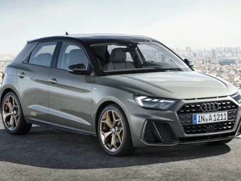
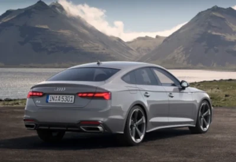
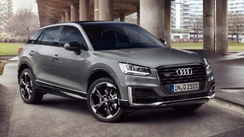
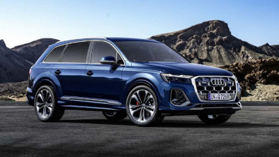
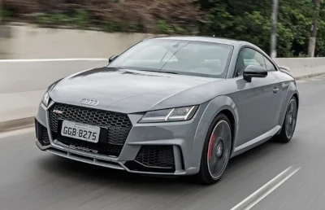

Audi Fundação
Sua fundação oficial ocorreu em 1910, em Zwickau, uma pequena cidade saxã no leste alemão. O fundador foi August Horch, um engenheiro que já trabalhava com a fabricação automotiva desde 1899. Inclusive, aqui vale destacar uma curiosidade bacana sobre o nome da empresa. Audi é uma tradução em latim de Horch. O logotipo das quatro argolas foi elaborado para simbolizar a ligação entre os fabricantes. Ao final da Segunda Guerra Mundial, a Audi acabou por ser descontinuada, para ressurgir em 1960, utilizando o logotipo de quatro anéis do extinto grupo Auto Union. Saiba mais em https://blog.paitomotors.com.br
Audi A1
O hatch Audi A1 é considerado a porta de entrada para uma das marcas de carro mais valiosas do mundo e também uma das mais desejadas. Desse modo, o modelo agrada quem busca ingressar no universo dos carros de luxo, sem fazer questão de um porte avantajado como o dos desportivos SUVs, mas recebendo em troca uma pegada mais esportiva.
Audi A5
A A5 usa a plataforma modular longitudinal da Audi, a mesma que a quarta geração do Audi A4 e utilize a Audi A6 de quarta geração e o Audi A8 de terceira geração. Foi oficialmente revelado no Salão Automóvel de Geneva, em 2007 com carroceria coupe "A5 Coupe (8T3)" Uma variante conversível com um teto de lona chamada "A5 Cabriolet (8F7)" começou a vender no início de 2009, substituindo o A4 Cabrio. Uma terceira carroceria liftback de cinco portas também de quatro lugares, foi lançado oficialmente no Salão Automóvel de Frankfurt, em 2009, sob a designação "A5 Sportback (8TA)" e foi colocado à venda no final daquele ano.
AUDI Q2
O Audi Q2 é um SUVs com preços entre 28 mil e 47.533,oo Euros, o modelo pode ter tração à frente ou integral. As versões de tração à frente são com motor 1.0 TFSI de 116 cv (gasolina) e 1.6 TDI de 116 cv (diesel). As variantes Quattro surgem no 2.0 TDI com 150 ou 190 cavalos.
AUDI Q7
Tecnologias de sistemas de assistência ao motorista e infotainment, uma experiência de condução envolvente, graças às soluções de tração integral quattro, suspensão pneumática, opcional, e um design potente além de muito espaço para até sete pessoas, esse é o Audi Q7.
AUDI TT
O Audi TT é um automóvel esportivo de duas portas, produzido pela Audi entre 1998 e 2023, fabricado em Győr, Hungria, pela Audi Hungaria Motor Kft, usando a carroceria que é produzida e pintada na planta de Ingolstadt, Alemanha. Ele é disponibilizado nas versões coupé 2+2 e roadster de apenas dois lugares. Em 2006, a Audi anunciou a segunda geração de seu esportivo compacto e em 2014 a terceira. Em 2015, a terceira geração do Audi TT chegou ao mercado com uma novidade no quesito tecnológico, um painel todo eletrônico chamado pela fabricante de Virtual Cockpit. O painel agora substituído por uma uma tela de 12 polegadas de alta definição pode ser configurado em dois modos de exibição. O primeiro, mais tradicional, conta com velocímetro e conta-giros em primeiro plano. Porém estes instrumentos podem ficar menores para dar destaque para o mapa do navegador GPS, no segundo modo. Em fevereiro de 2023, a montadora anunciou que o TT seria descontinuado com um modelo limitado. O modelo saiu de linha após 25 anos e cerca de 700 mil exemplares produzidos.